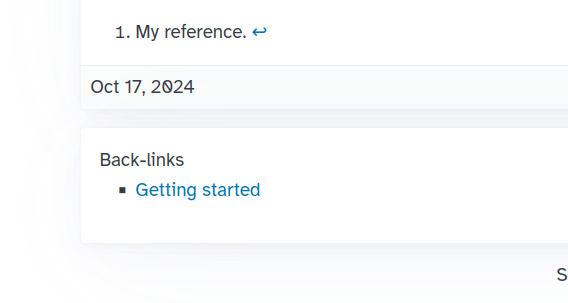

Markdown Formatting Options
Thursday, 17 October 2024 - ⧖ 9 minCommon Markdown
The content on Marmite accepts any valid CommonMark or Github Flavoured markdown
and some GFM extensions, Marmite also does post processing of HTML to support features such as
back-links and Obsidian links.
Paragraphs and formatting
Simple paragraph and usual formatting like bold, underline, italic and also all sorts of formatting elements, as follows.
**bold**, __underline__, *italic*
Strike-through
The following is no more.
The following is ~~no more~~.
Table
| Syntax | Description |
|---|---|
| Header | Title |
| List | Here's a list!
|
| Syntax | Description |
| ----------- | ----------- |
| Header | Title |
| List | Here's a list! <ul><li>Item one.</li><li>Item two.</li></ul> |
Footnotes
Here is a simple footnote1. With some2 additional text after it.
A reference1 can also be used to just create a link hidden from footnotes.
Here is a simple footnote[^1]. With some[^2] additional text after it.
A reference[1] can also be used to just create a link hidden from footnotes.
And on the end of the file:
[^1]: My footnote.
[^2]: Another footnote.
[1]: <https://en.wikipedia.org/wiki/Hobbit#Lifestyle> "Hobbit lifestyles"
[!TIP]
Add global references to the_references.mdfile to reuse on any content.
Block quote
>Not a quote
quote
Nested quote
>Not a quote
> quote
> > > Nested quote
Multiline quote
"Marmite is the easiest SSG" created by Bruno Rocha with the contribution of various people.
>>>
"Marmite is the easiest SSG" created by
Bruno Rocha with the contribution of various people.
>>>
Multi paragraph quote
Dorothy followed her through many of the beautiful rooms in her castle.
The Witch bade her clean the pots and kettles and sweep the floor and keep the fire fed with
> Dorothy followed her through many of the beautiful rooms in her castle.
>
> The Witch bade her clean the pots and kettles and sweep the floor and keep the fire fed with
Rich quotes
The quarterly results look great!
- Revenue was off the chart.
- Profits were higher than ever.
Everything is going according to plan.
> **The quarterly results look great!**
>
> - Revenue was off the chart.
> - Profits were higher than ever.
>
> *Everything* is going according to **plan**.
Underline
dunder
__dunder__
Code
import antigravity
def main():
print("Python is a great language")
fn main() {
println!("Marmite is made with Rust!");
}
```python
import antigravity
def main():
print("Python is a great language")
```
```rust
fn main() {
println!("Marmite is made with Rust!");
}
```
lists
- lists
- sub item
- images
- other
- tables
- Formatting
- lists
- sub item
- images
* other
- tables
- Formatting
Numbered
- First item
- Second item
- Indented unordered item
- Indented unordered item
- Third item
- Indented ordered item
- Indented ordered item
- Fourth item
1. First item
1. Second item
- Indented unordered item
- Indented unordered item
1. Third item
1. Indented ordered item
1. Indented ordered item
1. Fourth item
Starting lists with numbers requires a number\
- 1983. A great year!
- I think 1984 was second best.
- 1983\. A great year!
- I think 1984 was second best.
Images
Photo
Same but containing a tooltip if you hover the mouse on
Photo

Same but containing a tooltip if you hover the mouse on

Creating Links
Regular link
[Marmite](https://github.com/rochacbruno/marmite)
[A link with a tooltip](https://pudim.com.br "A picture of a pudim")
Auto-link
https://github.com/rochacbruno/marmite
https://www.markdownguide.org
fake@example.com
https://github.com/rochacbruno/marmite
<https://www.markdownguide.org>
<fake@example.com>
Wikilinks
Wikilinks allows to link using [[name|url]] syntax.
Read the Tutorial and Read the Tutorial and Read the Tutorial
Anchors also supported FAQ
It also resolve anchors like Wikilinks
and internal content by title like
MD Wikilinks or MD Format
[[Read the Tutorial|getting-started]] and [[Read the Tutorial|getting-started.md]] and [[Read the Tutorial|getting-started.html]]
[[Pudim|https://pudim.com.br]]
It also resolve anchors like [[Wikilinks|#wikilinks]]
and internal content by title like
[[MD Wikilinks|Markdown Format#Wikilinks]] or [[MD Format|Markdown Format]]
Obsidian Links
Obsidian links are made using [[page-slug]] or [[page-slug.md]]
Example:
about and about and about should point both to the about page.
Anchors also supported about > faq
It also resolve anchors like Obsidian Links
and internal content by title like
Markdown Format > Obsidian Links or Markdown Format
[[about]] and [[about.md]] and [[about.html]] should point both to the about page.
Anchors also supported [[about#faq]]
[[https://pudim.com.br]]
It also resolve anchors like [[#Obsidian Links]]
and internal content by title like
[[Markdown Format#Obsidian Links]] or [[Markdown Format]]
Back-links
Every time you link to another page or post
using the backreference like {slug}, {slug}.md or {slug}.html
marmite will track the backlinking and show
a list of pages that links to each other.
Examples:
hello Hello1 Hello2 Hello3 Hello4 Hello5
[[hello]]
[Hello1](hello.html)
[Hello2](hello.md)
[[Hello3|hello]]
[[Hello4|hello.md]]
<a href="hello.html">Hello5</a>
In any case the hello.html page will have a this page
on its list of back-links:

Extensions
Task
- Task 1
- Task 2
- [x] Task 1
- [ ] Task 2
Emoji
😄 - 🦀 - 🐍
:smile: - :crab: - :snake:
Description lists
- First term
- Details for the first term
- Second term
- Details for the second term
- More details in second paragraph.
First term
: Details for the **first term**
Second term
: Details for the **second term**
: More details in second paragraph.
Spoiler
This is secret
This is ||secret||
Math
Depends on
extra: {"math": true}defined on frontmatter, then MathJax is loaded.
When $a \ne 0$, there are two solutions to \(ax^2 + bx + c = 0\) and they are $$x = {-b \pm \sqrt{b^2-4ac} \over 2a}.$$
Inline math $1 + 2$ and display math $$x + y$$
$$ x^2 $$
When $a \ne 0$, there are two solutions to \\(ax^2 + bx + c = 0\\) and they are
$$x = {-b \pm \sqrt{b^2-4ac} \over 2a}.$$
Inline math $1 + 2$ and display math $$x + y$$
$$
x^2
$$
Alerts
Github Flavored Markdown (GFM) supports alerts, also called callouts or admonitions.
[!NOTE]
Highlights information that users should take into account, even when skimming.
[!TIP] Optional information to help a user be more successful.
[!IMPORTANT]
Crucial information necessary for users to succeed.
[!WARNING]
Critical content demanding immediate user attention due to potential risks.
[!CAUTION] Negative potential consequences of an action.
> [!NOTE]
> Highlights information that users should take into account, even when skimming.
> [!TIP]
> Optional information to help a user be more successful.
> [!IMPORTANT]
> Crucial information necessary for users to succeed.
> [!WARNING]
> Critical content demanding immediate user attention due to potential risks.
> [!CAUTION]
> Negative potential consequences of an action.
Optionally a title can be added to the alert:
[!NOTE] For your attention Highlights information that users should take into account, even when skimming.
> [!NOTE] For your attention
> Highlights information that users should take into account, even when skimming.
Diagrams
Depends on
extra: {"mermaid": true}defined on frontmatter, then MermaidJS is loaded.
mermaid_themeis also configurable with valuesforest,neutral,dark,forest,base,default
sequenceDiagram
Alice ->> Bob: Hello Bob, how are you?
Bob-->>John: How about you John?
Bob--x Alice: I am good thanks!
Bob-x John: I am good thanks!
Note right of John: Bob thinks a long<br/>long time, so long<br/>that the text does<br/>not fit on a row.
Bob-->Alice: Checking with John...
Alice->John: Yes... John, how are you?
graph LR
A[Square Rect] -- Link text --> B((Circle))
A --> C(Round Rect)
B --> D{Rhombus}
C --> D
xychart-beta
title "Sales Revenue"
x-axis [jan, feb, mar, apr, may, jun, jul, aug, sep, oct, nov, dec]
y-axis "Revenue (in $)" 4000 --> 11000
bar [5000, 6000, 7500, 8200, 9500, 10500, 11000, 10200, 9200, 8500, 7000, 6000]
line [5000, 6000, 7500, 8200, 9500, 10500, 11000, 10200, 9200, 8500, 7000, 6000]
pie title Pets adopted by volunteers
"Dogs" : 386
"Cats" : 85
"Rats" : 15
timeline
title History of marmite
2024-10-13 : Created
2024-10-14 : First Release
: First Contribution
2024-10-20 : Big refactor
2024-10-22 : Diagram support
Click to see the raw mermaid
```mermaid
sequenceDiagram
Alice ->> Bob: Hello Bob, how are you?
Bob-->>John: How about you John?
Bob--x Alice: I am good thanks!
Bob-x John: I am good thanks!
Note right of John: Bob thinks a long<br/>long time, so long<br/>that the text does<br/>not fit on a row.
Bob-->Alice: Checking with John...
Alice->John: Yes... John, how are you?
```
```mermaid
graph LR
A[Square Rect] -- Link text --> B((Circle))
A --> C(Round Rect)
B --> D{Rhombus}
C --> D
```
```mermaid
xychart-beta
title "Sales Revenue"
x-axis [jan, feb, mar, apr, may, jun, jul, aug, sep, oct, nov, dec]
y-axis "Revenue (in $)" 4000 --> 11000
bar [5000, 6000, 7500, 8200, 9500, 10500, 11000, 10200, 9200, 8500, 7000, 6000]
line [5000, 6000, 7500, 8200, 9500, 10500, 11000, 10200, 9200, 8500, 7000, 6000]
```
```mermaid
pie title Pets adopted by volunteers
"Dogs" : 386
"Cats" : 85
"Rats" : 15
```
```mermaid
timeline
title History of marmite
2024-10-13 : Created
2024-10-14 : First Release
: First Contribution
2024-10-20 : Big refactor
2024-10-22 : Diagram support
```
HTML
All raw html is allowed
Superscript
802
80<sup>2</sup>
Embed
Just use raw HTML for now, in future we may have a shorcode.
<iframe width="260" height="160" src="https://www.youtube.com/embed/MjrBTcnnK6c?si=PmQWsGiTh5XguSpb" title="YouTube video player"></iframe>
Pico CSS components
The default embedded template uses picocss so it is possible to write raw HTML like this:
FAQ
Why is it named Marmite?
The creator of this project was looking for some cool name to use for a markdown related project. Then while having bread with Marmite spread for breakfast it looked like a good idea!
Why Rust?
Why not?
<details>
<summary>Why is it named Marmite?</summary>
The ...
</details>
<hr />
<details>
<summary>Why Rust?</summary>
**Why not?**
</details>
<hr />
Symbols
Copyright (©) — ©
Registered trademark (®) — ®
Trademark (™) — ™
Euro (€) — €
Left arrow (←) — ←
Up arrow (↑) — ↑
Right arrow (→) — →
Down arrow (↓) — ↓
Degree (°) — °
Pi (π) — π
This is a ©left material.
This is a ©left material.
Bye!
Please consider giving a ☆ on Marmite Github repository, that helps a lot!